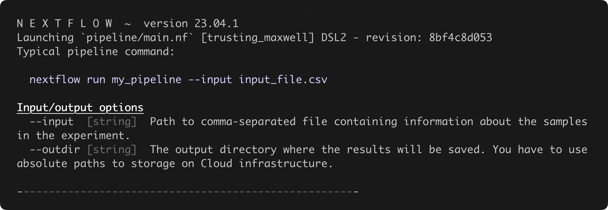
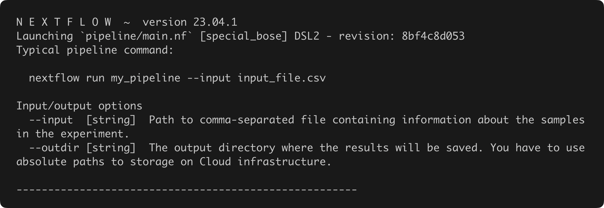

Parameter help
Configure help message
Add the following configuration to your configuration files to enable the creation of help messages:
That's it! Every time the pipeline user passes the --help and --helpFull parameters to the pipeline, the help message will be created!
The help message can be customized with a series of different options. See help configuration docs for a list of all options.
Help message
Following example shows a snippet of a JSON schema which can be used to perfect visualize the differences between the different help messages. This schema contains one group of parameters called Input parameters that contains two parameters: --input and --outdir. There are also two ungrouped parameters in this schema: --reference and --type. --reference is a nested parameter that contains the .fasta, .fai and .aligners subparameters. .aligners also contains two subparameters: .bwa and .bowtie.
There are three different help messages:
- Using
--helpwill only show the top level parameters (--input,--outdir,--referenceand--typein the example). The type, description, possible options and defaults of these parameters will also be added to the message if they are present in the JSON schema. - Using
--helpFullwill print all parameters (no matter how deeply nested they are) (--input,--outdir,--reference.fasta,--reference.fai,--reference.aligners.bwa,--reference.aligners.bowtieand--typein the example) --helpcan also be used with a parameter given to it. This will print out a detailed help message of the parameter. This will also show the subparameters present for the parameter.
...
"$defs": { // A section to define several definition in the JSON schema
"Input parameters": { // A group called "Input parameters"
"properties": { // All properties (=parameters) in this group
"input": {
"type": "string",
"description": "The input samplesheet",
"format": "file-path",
"pattern": "^.$\.csv$",
"help_text": "This file needs to contain all input samples",
"exists": true
},
"outdir": {
"type": "string",
"description": "The output directory",
"format": "directory-path",
"default": "results"
}
}
}
},
"properties": { // Ungrouped parameters go here
"reference": {
"type": "object", // A parameter that contains nested parameters is always an "object"
"description": "A group of parameters to configure the reference sets",
"properties": { // All parameters nested in the --reference parameter
"fasta": {
"type": "string",
"description": "The FASTA file"
},
"fai": {
"type": "string",
"description": "The FAI file"
},
"aligners": {
"type": "object",
"description": "A group of parameters specifying the aligner indices",
"properties": { // All parameters nested in the --reference.aligners parameter
"bwa": {
"type": "string",
"description": "The BWA index"
},
"bowtie": {
"type": "string",
"description": "The BOWTIE index"
}
}
}
}
},
"type": {
"type": "string",
"description": "The analysis type",
"enum": ["WES","WGS"]
}
}
...
--reference [object] A group of parameters to configure the reference sets
--type [string] The analysis type (accepted: WES, WGS)
--help [boolean, string] Show the help message for all top level parameters. When a parameter is given to `--help`, the full help message of that parameter will be printed.
--helpFull [boolean] Show the help message for all non-hidden parameters.
--showHidden [boolean] Show all hidden parameters in the help message. This needs to be used in combination with `--help` or `--helpFull`.
Input parameters
--input [string] The input samplesheet
--outdir [string] The output directory [default: results]
--reference.fasta [string] The FASTA file
--reference.fai [string] The FAI file
--reference.aligners.bwa [string] The BWA index
--reference.aligners.bowtie [string] The BOWTIE index
--type [string] The analysis type (accepted: WES, WGS)
--help [boolean, string] Show the help message for all top level parameters. When a parameter is given to `--help`, the full help message of that parameter will be printed.
--helpFull [boolean] Show the help message for all non-hidden parameters.
--showHidden [boolean] Show all hidden parameters in the help message. This needs to be used in combination with `--help` or `--helpFull`.
Input parameters
--input [string] The input samplesheet
--outdir [string] The output directory [default: results]
The help message will always show the ungrouped parameters first. --help, --helpFull and --showHidden will always be automatically added to the help message. These defaults can be overwritten by adding them as ungrouped parameters to the JSON schema.
After the ungrouped parameters, the grouped parameters will be printed.
Hidden parameters
Params that are set as hidden in the JSON Schema are not shown in the help message.
To show these parameters, pass the --showHidden parameter to the nextflow command.
Coloured logs
By default, the help output is coloured using ANSI escape codes.
If you prefer, you can disable these by setting the validation.monochromeLogs configuration option to true


paramsHelp()
Deprecated
This function has been deprecated in v2.1.0. Use the help configuration instead
This function returns a help message with the command to run a pipeline and the available parameters.
Pass it to log.info to print in the terminal.
It accepts three arguments:
- An example command, typically used to run the pipeline, to be included in the help string
- An option to set the file name of a Nextflow Schema file:
parameters_schema: <schema.json>(Default:nextflow_schema.json) - An option to hide the deprecation warning:
hideWarning: <true/false>(Default:false)
Note
paramsHelp() doesn't stop pipeline execution after running.
You must add this into your pipeline code if it's the desired functionality.
Typical usage:
{
"$schema": "https://json-schema.org/draft/2020-12/schema",
"$id": "https://raw.githubusercontent.com/nf-core/testpipeline/master/nextflow_schema.json",
"title": "nf-core/testpipeline pipeline parameters",
"description": "this is a test",
"type": "object",
"$defs": {
"input_output_options": {
"title": "Input/output options",
"type": "object",
"fa_icon": "fas fa-terminal",
"description": "Define where the pipeline should find input data and save output data.",
"required": ["input", "outdir"],
"properties": {
"input": {
"type": "string",
"format": "file-path",
"mimetype": "text/csv",
"schema": "assets/schema_input.json",
"pattern": "^\\S+\\.(csv|tsv|yaml|json)$",
"description": "Path to comma-separated file containing information about the samples in the experiment.",
"help_text": "You will need to create a design file with information about the samples in your experiment before running the pipeline. Use this parameter to specify its location. It has to be a comma-separated file with 3 columns, and a header row. See [usage docs](https://nf-co.re/testpipeline/usage#samplesheet-input).",
"fa_icon": "fas fa-file-csv"
},
"outdir": {
"type": "string",
"format": "directory-path",
"description": "The output directory where the results will be saved. You have to use absolute paths to storage on Cloud infrastructure.",
"fa_icon": "fas fa-folder-open"
}
}
}
},
"allOf": [
{
"$ref": "#/$defs/input_output_options"
}
]
}
Output:
N E X T F L O W ~ version 23.04.1
Launching `pipeline/main.nf` [infallible_turing] DSL2 - revision: 8bf4c8d053
Typical pipeline command:
nextflow run my_pipeline --input input_file.csv
Input/output options
--input [string] Path to comma-separated file containing information about the samples in the experiment.
--outdir [string] The output directory where the results will be saved. You have to use absolute paths to storage on Cloud infrastructure.
------------------------------------------------------
Warning
We shouldn't be using exit as it kills the Nextflow head job in a way that is difficult to handle by systems that may be running it externally, but at the time of writing there is no good alternative.
See nextflow-io/nextflow#3984.